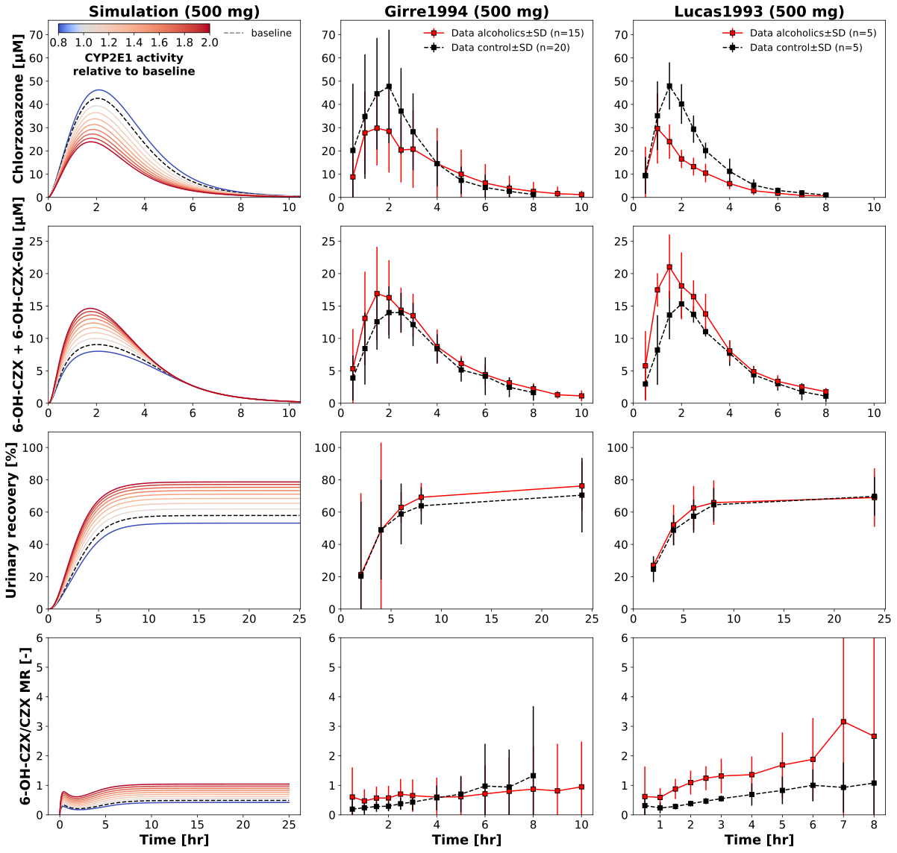

Overview
Models
| model | source |
|---|---|
| model | chlorzoxazone_body_flat.xml |
Datasets
Figures (1)


Code
girre1994_lucas1993_induction.py
"""Scan of the CYP2E1 activity, compared with alcoholics of Girre1994 and Lucas1993.
Oral doses of 250, 500 and 750 mg chlorzoxazone (tablet) with the CYP2E1 activity
scanned from 0.8 to 2 relative to the baseline: chlorzoxazone and
6-OH-CZX + CZX-Glu in plasma, the urinary recovery and the metabolic ratio
6-OH-CZX/CZX of the simulations of 500 mg, compared with the alcoholics and the
controls of Girre1994 and Lucas1993 (500 mg).
The amount of alcohol of alcoholics in studies of chlorzoxazone: >80 g/day
(Mishin1998), 140-210 g/day (Liangpunsakul2005).
"""
from collections.abc import Sequence
from typing import ClassVar, override
import matplotlib
import matplotlib.pyplot as plt
import numpy as np
from matplotlib.axes import Axes
from matplotlib.cm import ScalarMappable
from matplotlib.colors import Colormap, TwoSlopeNorm
from matplotlib.figure import Figure as FigureMPL
from matplotlib.lines import Line2D
from pkpdsim.metadata import ApplicationForm
from sbmlsim import Q
from sbmlsim.data import DataSet
from sbmlsim.simulation import Simulation
from pkdb_models.models.chlorzoxazone import MODEL
from pkdb_models.models.chlorzoxazone.experiments.base_experiment import (
ChlorzoxazoneSimulationExperiment,
HelperMapping,
LineStyle,
Sids,
metabolic_ratio,
required,
)
from pkdb_models.models.chlorzoxazone.models import rcParams
#: units of the plotted selections
unit_dict: dict[str, str] = {
Sids.cpl_czx: "µM",
Sids.cve_czx6oh_all: "µM",
Sids.aurine_czxoglu: "mmole",
}
def get_ax_max(axes: Sequence[Axes]) -> tuple[float, float]:
"""Get the maximal x and y limits of a row of axes.
Args:
axes: the axes, the first one with the simulations, the others with data.
Returns:
The maximal x limit of the axes with data and the maximal y limit.
"""
max_y = max(ax.get_ylim()[1] for ax in axes)
# x axis max only for data, not simulation
max_x = max(ax.get_xlim()[1] for ax in axes[1:])
return max_x, max_y
def get_mpl_line(fig_id: str) -> str:
"""Get the line style of a group, dashed for the controls."""
if "control" in fig_id:
return "--"
return "-"
def get_label(fig_id: str) -> str:
"""Get the label of a group, the controls or the alcoholics."""
if "control" in fig_id:
return "control"
return "alcoholics"
class AlcoholInduction(ChlorzoxazoneSimulationExperiment):
"""Scan of the CYP2E1 activity, compared with Girre1994 and Lucas1993."""
doses: ClassVar[list[int]] = [250, 500, 750]
cmap: ClassVar[Colormap] = matplotlib.colormaps["coolwarm"]
alcoholics_color: ClassVar[str] = "red"
#: CYP2E1 activities relative to the baseline
cyp2e1_activities: ClassVar[np.ndarray] = np.linspace(0.8, 2, 10)
@property
def norm(self) -> TwoSlopeNorm:
"""Norm of the colors of the CYP2E1 activities, centered at the baseline."""
return TwoSlopeNorm(
vcenter=1.0,
vmin=np.min(self.cyp2e1_activities),
vmax=np.max(self.cyp2e1_activities),
)
@property
def k_baseline(self) -> int:
"""Index of the baseline CYP2E1 activity (1) in the activities."""
return int(np.argmin(abs(self.cyp2e1_activities - 1)))
@property
def study_mapping(self) -> dict[str, dict[str, HelperMapping]]:
"""Datasets of the studies by study and group (all 500 mg)."""
return {
"Lucas1993": {
"alcoholics_czx": HelperMapping(
id="Fig2",
yid=Sids.cpl_czx,
dset_label="Fig2_alcoholics_chlorzoxazone",
mr=self.Mr.czx,
dose=500,
),
"control_czx": HelperMapping(
id="Fig2",
yid=Sids.cpl_czx,
dset_label="Fig2_healthy_chlorzoxazone",
mr=self.Mr.czx,
dose=500,
),
"control_czx6oh": HelperMapping(
id="Fig2",
yid=Sids.cve_czx6oh_all,
dset_label="Fig2_healthy_6-hydroxychlorzoxazone",
mr=self.Mr.czx6oh,
dose=500,
),
"alcoholics_czx6oh": HelperMapping(
id="Fig2",
yid=Sids.cve_czx6oh_all,
dset_label="Fig2_alcoholics_6-hydroxychlorzoxazone",
mr=self.Mr.czx6oh,
dose=500,
),
"alcoholics_recovery": HelperMapping(
id="Tab5",
yid=Sids.aurine_czxoglu,
dset_label="Tab5_alcoholics_6-hydroxychlorzoxazone",
mr=self.Mr.czx6oh,
dose=500,
),
"control_recovery": HelperMapping(
id="Tab5",
yid=Sids.aurine_czxoglu,
dset_label="Tab5_healthy_6-hydroxychlorzoxazone",
mr=self.Mr.czx6oh,
dose=500,
),
},
"Girre1994": {
"alcoholics_czx": HelperMapping(
id="Fig1",
yid=Sids.cpl_czx,
dset_label="Fig1_alcoholics",
mr=self.Mr.czx,
dose=500,
),
"control_czx": HelperMapping(
id="Fig1",
yid=Sids.cpl_czx,
dset_label="Fig1_healthy",
mr=self.Mr.czx,
dose=500,
),
"alcoholics_czx6oh": HelperMapping(
id="Fig2",
yid=Sids.cve_czx6oh_all,
dset_label="Fig2_alcoholics",
mr=self.Mr.czx6oh,
dose=500,
),
"control_czx6oh": HelperMapping(
id="Fig2",
yid=Sids.cve_czx6oh_all,
dset_label="Fig2_healthy",
mr=self.Mr.czx6oh,
dose=500,
),
"alcoholics_recovery": HelperMapping(
id="Fig3",
yid=Sids.aurine_czxoglu,
dset_label="Fig3_alcoholics",
mr=self.Mr.czx6oh,
dose=500,
),
"control_recovery": HelperMapping(
id="Fig3",
yid=Sids.aurine_czxoglu,
dset_label="Fig3_healthy",
mr=self.Mr.czx6oh,
dose=500,
),
},
}
@override
def datasets(self) -> dict[str, DataSet]:
dsets = {}
for study, fig_map in self.study_mapping.items():
for fig_id, hm in fig_map.items():
df = self.load_dataframe(required(hm.id), study=study)
dset = DataSet.from_df(
df[df["label"] == required(hm.dset_label)], self.ureg
)
dset.unit_conversion("mean", 1 / required(hm.mr))
dsets[f"ds_{study}_{fig_id}"] = dset
return dsets
@override
def simulations(self) -> dict[str, Simulation]:
tcsims: dict[str, Simulation] = {}
for dose in self.doses:
changes = {
**self.default_changes(ApplicationForm.TABLET),
"PODOSE_czx": Q(dose, "mg"),
}
for k, activity in enumerate(self.cyp2e1_activities):
tcsims[f"dose_{dose}_cyp2e1_{k}"] = Simulation(
time_unit="min",
end=60 * 25,
preinit_changes={
**changes,
"LI__f_cyp2e1": Q(activity, "dimensionless"),
},
)
return tcsims
@override
def figures_mpl(self) -> dict[str, FigureMPL]:
return {"girre_lucas": self.plot_girre_lucas()}
def plot_girre_lucas(self) -> FigureMPL:
"""Simulations of 500 mg next to the data of Girre1994 and Lucas1993.
Returns:
The figure, a row per measurement and a column for the simulations
and per study.
"""
with matplotlib.rc_context(rcParams):
dose = 500
fig, axes = plt.subplots(
ncols=3, nrows=4, figsize=(3 * 7 * 0.8, 4 * 5 * 0.8)
)
for ax in axes[-1]:
ax.set_xlabel("Time [hr]")
axes[0, 0].set_ylabel(f"{self.label_czx} [µM]")
axes[1, 0].set_ylabel(f"{self.label_czx6oh_all} [µM]")
axes[2, 0].set_ylabel("Urinary recovery [%]")
axes[3, 0].set_ylabel("6-OH-CZX/CZX MR [-]")
keys: list[str] = [Sids.cpl_czx, Sids.cve_czx6oh_all, Sids.aurine_czxoglu]
# plot sim results for czx, czx6oh, urinary recovery
for i, key in enumerate(keys):
self._plot_sim_result(dose, key, axes[i, 0])
# plot sim ratios
self._plot_sim_ratios(dose, axes[-1, 0])
# plot data for czx, czx6oh, recovery
for i, study in enumerate(["Girre1994", "Lucas1993"]):
for fig_id, hm in self.study_mapping[study].items():
self._plot_data_tc(
dset=self._datasets[f"ds_{study}_{fig_id}"],
hm=hm,
dose=dose,
ax=axes[keys.index(required(hm.yid)), i + 1],
marker="s",
linestyle=get_mpl_line(fig_id),
label=get_label(fig_id),
color=self.get_group_color(fig_id),
)
self._plot_data_ratios(
study=study, dose=dose, ax=axes[-1, i + 1], marker="s"
)
for i, ax_tuple in enumerate(axes):
if i != len(axes) - 1:
max_x, max_y = get_ax_max(ax_tuple)
for ax in ax_tuple:
ax.set_ylim(bottom=0, top=max_y)
ax.set_xlim(left=0, right=max_x)
else:
for ax in ax_tuple:
ax.set_ylim(bottom=0, top=6)
axes[0, 0].text(
0.5,
1,
"Simulation (500 mg)",
transform=axes[0, 0].transAxes,
ha="center",
va="bottom",
fontsize=20,
fontweight="bold",
)
axes[0, 1].text(
0.5,
1,
"Girre1994 (500 mg)",
transform=axes[0, 1].transAxes,
ha="center",
va="bottom",
fontsize=20,
fontweight="bold",
)
axes[0, 2].text(
0.5,
1,
"Lucas1993 (500 mg)",
transform=axes[0, 2].transAxes,
ha="center",
va="bottom",
fontsize=20,
fontweight="bold",
)
cb_axes = axes[0, 0].inset_axes(bounds=[0.04, 0.93, 0.6, 0.05])
cb = plt.colorbar(
mappable=ScalarMappable(norm=self.norm, cmap=self.cmap),
cax=cb_axes,
ax=axes[0, 0],
orientation="horizontal",
)
# the gradient as vector cells: matplotlib rasterizes it into an
# embedded image, which some SVG viewers do not show; the edges of
# the cells in their color close the seams between them
if cb.solids is not None:
cb.solids.set_rasterized(False)
cb.solids.set_edgecolor("face")
cb.ax.set_xscale("linear")
cb.set_label(
label="CYP2E1 activity\nrelative to baseline", size=15, weight="bold"
)
handle = Line2D([], [], linestyle="--", color="grey", label="baseline")
axes[0, 0].legend(handles=[handle], frameon=False)
for ax in axes[0, 1:]:
ax.legend(frameon=False)
fig.tight_layout()
return fig
def _plot_sim_result(self, dose: int, key: str, ax: Axes) -> None:
"""Plot a selection of the simulations of a dose per CYP2E1 activity.
The baseline activity is dashed and black.
Args:
dose: dose of chlorzoxazone [mg].
key: the selection.
ax: the axes.
"""
norm = self.norm
k_baseline = self.k_baseline
for k, activity in enumerate(self.cyp2e1_activities):
result = self.results[f"task_dose_{dose}_cyp2e1_{k}"]
t, *band = self.timecourse_band(result, key, ("hr", unit_dict[key]))
if key == Sids.aurine_czxoglu:
# the recovery in percent of the dose
factor = (
(Q(1, unit_dict[key]) / (Q(dose, "mg") / self.Mr.czx))
.to("percent")
.magnitude
)
band = [b * factor for b in band]
self.plot_bands(
ax,
t,
*band,
style=LineStyle(
color="black" if k == k_baseline else self.cmap(norm(activity)),
linestyle="--" if k == k_baseline else "-",
),
)
def _plot_data_tc(
self,
dset: DataSet,
hm: HelperMapping,
dose: int,
ax: Axes,
marker: str,
linestyle: str,
label: str,
color: str,
) -> None:
"""Plot the time course of a dataset, the recovery in percent of the dose.
Args:
dset: the dataset.
hm: the information of the dataset.
dose: dose of chlorzoxazone [mg].
ax: the axes.
marker: marker of the data.
linestyle: line style of the data.
label: label of the group.
color: color of the group.
"""
yid = required(hm.yid)
ydata = dset.get_quantity("mean").to(unit_dict[yid])
y_err = None
if "mean_sd" in dset.columns:
y_err = Q(dset["mean_sd"], dset.uinfo["mean"])
y_err = y_err.to(unit_dict[yid])
if yid == Sids.aurine_czxoglu:
ydata = ydata / (Q(dose, "mg") / self.Mr.czx)
ydata = ydata.to("percent")
y_err = required(y_err) / (Q(dose, "mg") / self.Mr.czx)
y_err = y_err.to("percent")
ax.errorbar(
dset.get_quantity("time").to("hr").magnitude,
ydata.magnitude,
yerr=None if y_err is None else y_err.magnitude,
linestyle=linestyle,
color=color,
marker=marker,
markeredgecolor="black",
label=rf"Data {label}$\pm$SD (n={dset['count'].values[0]})",
)
def _plot_sim_ratios(self, dose: int, ax: Axes) -> None:
"""Plot the metabolic ratio 6-OH-CZX/CZX of a dose per CYP2E1 activity.
Args:
dose: dose of chlorzoxazone [mg].
ax: the axes.
"""
k_baseline = self.k_baseline
for k, activity in enumerate(self.cyp2e1_activities):
# the draws of a run over them on the time points of the figure
result = self.result_on_time_grid(f"task_dose_{dose}_cyp2e1_{k}")
time = Q(result["time"].values, result.units["time"]).to("hr")
self.plot_band(
ax,
time.magnitude,
self.draw_values(metabolic_ratio(result)),
LineStyle(
color="black"
if k == k_baseline
else self.cmap(self.norm(activity)),
linestyle="--" if k == k_baseline else "-",
),
)
def _plot_data_ratios(self, study: str, dose: int, ax: Axes, marker: str) -> None:
"""Plot the metabolic ratio 6-OH-CZX/CZX of the groups of a study.
The error is propagated from the SDs of chlorzoxazone and 6-OH-CZX.
Args:
study: the study.
dose: dose of chlorzoxazone [mg].
ax: the axes.
marker: marker of the data.
"""
fig_map = self.study_mapping[study]
for suffix, color in zip(
["alcoholics", "control"], [self.alcoholics_color, "black"], strict=True
):
if (
f"{suffix}_czx" in fig_map
and f"{suffix}_czx6oh" in fig_map
and fig_map[f"{suffix}_czx"].dose == dose
):
dset_czx = self._datasets[f"ds_{study}_{suffix}_czx"]
dset_czx6oh = self._datasets[f"ds_{study}_{suffix}_czx6oh"]
time = dset_czx.get_quantity("time").to("hr")
conc_czx = Q(dset_czx["mean"].values, dset_czx["mean_unit"].values[0])
conc_czx6oh = Q(
dset_czx6oh["mean"].values, dset_czx6oh["mean_unit"].values[0]
)
std_czx = Q(dset_czx["mean_sd"].values, dset_czx["mean_unit"].values[0])
std_czx6oh = Q(
dset_czx6oh["mean_sd"].values,
dset_czx6oh["mean_unit"].values[0],
)
ratio = conc_czx6oh / conc_czx
ratio = ratio.to("dimensionless")
error = (
(1 / conc_czx**2 * conc_czx6oh * std_czx) ** 2
+ (1 / conc_czx * std_czx6oh) ** 2
) ** 0.5
error = error.to("dimensionless")
ax.errorbar(
x=time.magnitude,
y=ratio.magnitude,
yerr=error.magnitude,
linestyle=get_mpl_line(f"{suffix}_czx"),
color=color,
marker=marker,
markeredgecolor="black",
)
def get_group_color(self, fig_id: str) -> str:
"""Get the color of a group, black for the controls."""
if "control" in fig_id:
return "black"
return self.alcoholics_color
if __name__ == "__main__":
MODEL.run_experiments(AlcoholInduction, output_dir="test")